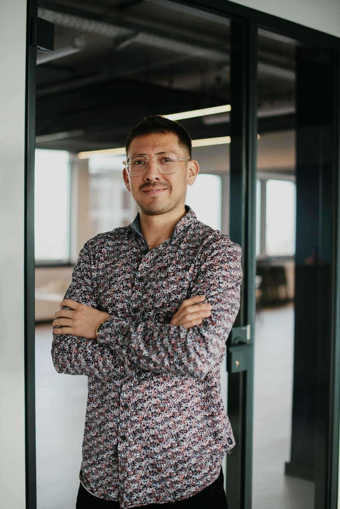

Jorge Luis Aguilar Salas
Operations & GTM leader bridging mobility marketplaces and B2B SaaS.

Five years building the operational layer that makes marketplaces work.
Berlin-based operations leader with five years scaling supply networks and partnership channels across mobility marketplaces — Wolt, Bolt, Bliq — and freelance strategy work for early-stage fleet SaaS via Salas UG. Focused on the operational layer that makes marketplaces and B2B SaaS go-to-market actually work: onboarding flows, partner accountability frameworks, compliance design, and the analytical discipline to know which lever moves which KPI.
Working across English, German, and Spanish in EMEA, leaning on Python, SQL, Streamlit, and applied ML when the operating problem becomes an analytical one. Currently open to senior operations, GTM, business development, or strategy roles — mobility, B2B SaaS, or any sector where operational rigor is the competitive advantage.
Operations across mobility marketplaces, SaaS, and B2B.
FleetTech & Mobility Strategy Consultant — GTM, Compliance & Growth in Europe
Independent operator advising mobility and logistics ventures on fleet compliance, operational design, and go-to-market execution across DACH. Current engagement: Nexio Fleet.
Strategy & Operations Lead — Fleet Compliance & SaaS
Led compliance system design and translated regulatory requirements into product workflows during Nexio Fleet's early-stage development. Urban-fleet SaaS serving Berlin and Brandenburg.
- Built compliance reporting framework covering 90–150 drivers across 3 fleet operators
- Reduced manual reporting time by 60–70% via Python CSV-ingestion automation
- Established audit-ready driver and vehicle-level tracking aligned with LABO requirements
- Translated regulatory requirements into product specs for the Driver App and Fleet Dashboard
- Contributed to tiered compliance pricing strategy and grant positioning up to €50,000 (IBB GründungsBONUS Plus)
- Stack: Firebase (Auth, Firestore), Python, CSV pipelines, Uber & Bolt data integration. Reference letter on file from CEO Aleksander Boski.
Supply Operations Manager
B2B mobility marketplace connecting fleet partners and drivers across Germany. Owned supply-side scale-up, key account management, and pricing optimization.
- Scaled supply network 2.6× partners and 4.7× drivers in 12 months
- Lifted partner retention from <50% to >80% via incentive redesign and onboarding overhaul
- Piloted a program driving 4.7× ride growth and €3M ARR contribution
- Optimized pricing through market research; localized product features via user research
- Trained junior Key Account Managers; led bilingual (DE/EN) partner negotiations
Operations Specialist
Ride-hailing operations for Southern Germany. Driver acquisition, activation, and 3PL supply management.
- Doubled driver activation rate in 6 weeks through onboarding process redesign
- Materially reduced cancellation rate via 3PL accountability framework
- Owned 3PL supply management for Munich and the wider South Germany region
- Designed bonus and incentive programs to balance supply and demand peaks
- Built monitoring dashboards for driver performance and city operations metrics
Sustainability Operations Associate · Courier Partner
Q-commerce and food delivery operations. Courier onboarding, fleet sustainability, and process optimization. Started part-time as a courier partner before joining the operations team.
- Contributed to ~30% logistics cost reduction across courier operations
- Led gear recycling and circular-economy initiatives (project management)
- Optimized courier onboarding and bike-check workflows
- Bottom-up operational understanding from courier role before joining ops team
Digital Sustainability Consultant
NGO project supporting the certification of a Participatory Guarantee System for Organic Agriculture for small businesses in Mexico. Adapted IFOAM Organics International standards, built digital documentation frameworks, and handled data across organic and conventional production datasets.
Market Research Analyst
Fair-trade Mexican clothing brand. Conducted market research and competitive benchmarking to support US-market expansion.
Shop Manager
Family business in frozen and fresh food distribution. Leadership across accounting, sales, procurement, and marketing. Negotiated regional B2B contracts; inventory and supplier management.
Administrative Assistant
Mexican federal Ministry of Finance. Administrative support and stakeholder coordination within tax administration.
Seven principles I bring to marketplace operations and B2B SaaS.
Earned through operating across mobility platforms, sharpened through analytical work. These are the principles that anchor how I diagnose, plan, and execute.
Diagnose before levering
Most operating problems aren't modeling problems — they're framing or instrumentation problems. The work that creates value is naming what's actually broken before applying a fix.
Quality is multi-dimensional
Define "good" across pillars — safety, reliability, peace of mind. Measure with operational telemetry first, customer ratings second. Premium customers value their time more than rating prompts.
Grow with discipline
Markets earn growth by passing explicit gates — readiness, concentration, rejection-rate, supply depth. Filter-passing is necessary, not sufficient.
Translate diagnosis into roadmaps
Insight without execution is academic. The strongest planning artifacts name assumptions, structural floors, and explicit decision points where the plan pivots or doubles down.
Sequence risk before levers fire
What you defer matters as much as what you do. Remediate fragile markets before scaling them; design for downside, not just upside.
ML for probabilistic problems; rules for policy
Trying to use ML for tier classification adds complexity without value. Trying to use rules for prediction misses the probabilistic structure. The split is first-principles, not stylistic.
Partner accountability is conversation infrastructure
Tiered scorecards turn partner performance into structured commercial conversations — Tier A standard terms, Tier C 90-day improvement plan with named targets. The framework is the conversation.
Working tools and frameworks — not decks alone.
Marketplace Strategy & Analytics — European Premium Mobility
A self-directed analytical project applying my framework to a multi-city premium ride marketplace. Demonstrates how I approach growth strategy, partnership accountability, and quality economics at marketplace scale.
- BD strategy across regions. Growth-market selection through explicit filter gates — partnership-channel markets (airline-driven, Southern Europe) and direct-customer markets (Western Europe). Channel-diversified by design so a partnership renegotiation doesn't compound across the portfolio.
- Customer-facing analytical dashboards. Interactive dashboards built in Python, Streamlit, and Plotly — operational telemetry, partner performance, segment economics, and quality-vs-margin views.
- Partnership segmentation & supplier scorecard. Tiered classification across the supply base, each tier mapped to a structured commercial conversation — standard terms, monitoring, improvement plan, or deactivation timeline.
- Quality Contribution Index. Penalty-adjusted contribution metric translating quality failures into a per-ride P&L number. Bridges quality discipline and finance — prevents quality-vs-margin trade-offs from drifting silently during scale-up.
Full project detail available on request.
Nexio Fleet — Strategy & Operations Engagement
Compliance system design and operational architecture for an early-stage fleet-compliance SaaS in Berlin and Brandenburg. Reporting framework covering 90–150 drivers, 60–70% reduction in manual reporting time, audit-ready data tracking aligned with LABO and Berlin Mobilitätsgesetz, and product specs for Driver App and Fleet Dashboard.
Reference letter on file from Aleksander Boski, CEO of Nexio Fleet GmbH.
Marketplace Operations Capabilities Framework
Personal framework codifying seven capabilities required to lead marketplace operations at the senior level — diagnostics, quality management, growth strategy, planning, risk sequencing, data and AI enablement, and partner management. Each capability anchored to JD translation, evidence, and worked examples.
Downloadable PDF available on request.
What I work with, across operations and analytics.
Operations education, analytical depth, continuous certification.
Open to senior roles. Let's talk.
Currently open to senior Operations, GTM, Business Development, or Strategy roles — full-time in Berlin or remote-EMEA. If you're building something where operational rigor is the competitive advantage, let's have a conversation.